En un mundo donde los recursos naturales son limitados y la demanda por un desarrollo sustentable es cada vez más urgente, comprender el equilibrio entre la naturaleza y el progreso humano se ha vuelto esencial. En este espacio, exploraremos los conceptos clave presentados en las Unidades 1 y 2 del libro "Ambiente y sustentabilidad", donde aprenderás sobre los principios fundamentales de la ecología, los ciclos biogeoquímicos, y la importancia de los recursos naturales para un futuro sostenible. Nuestra misión es promover una mayor conciencia ambiental a través de la educación y la acción responsable hacia nuestro planeta.
Inicio
Bienvenidos a nuestro sitio sobre Ambiente y Sustentabilidad

Unidad 1.1 ¿Qué es el planeta Tierra?
La Tierra es un sistema viviente o ecosistema por si misma. Esta característica está definida por la interacción de los diversos ecosistemas acuáticos y terrenos que la integran, y que al evolucionar mediante procesos geoquímicos y biológicos determinaron las condiciones iniciales apropiadas para el inicio de la vida y la principal consolidación a la biosfera.
La tierra es finita en espacio, recursos y sustentabilidad
La Tierra. también llamada "el planeta azul",por el color azul que la caracteriza en su superficie está cubierta en
un 70% por la hidrosfera ( 1.300 millones de kilómetros cúbicos de agua) donde 97% son océanos (agua salada) .2% hielo
glaciar de las zonas polares y partes altas de las montañas (28.3 millones de km'), y que a pesar de ser agua dulce, no
está disponible ni accesible al ser humano. Solamente d 1% (8.1 millones de km3) de toda el agua presente en el planeta
es agua dulce. accesible y disponible para el consumo de los seres vivos. Actualmente la población mundial connsume de
54% del agua dulce disponible.

suelo). Los recursos agotables o no renovables existen en la Tierra en una cantidad finita o determinada. Si no se usan estos recursos de una manera racional y e ficiente se agotarán, ya que no se forman más en la naturaleza. como los recursos fósiles (carbón y petóleo), o porque se forman a una tasa inferior a la de degradación o destrucción, como por ejemplo el suelo, el cual es un recurso renovable pero por su lento proceso de formación se considera un recurso agotable.
Los recursos renovables son aquelos que se generan y conservan por medio de procesos bioquímicos que se producen en los diferentes ciclos de la vida como el caso del oxígeno, del agua, del carbono, del nitrógeno y los seres vivos.
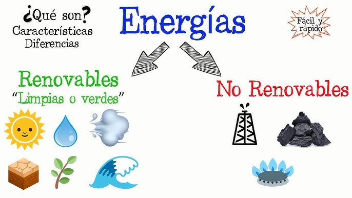
Equilibrio u homeostasis
La Tierra, como ecosistema, muestra una característica notable de autorregulación, manteniendo estables condiciones como la temperatura global, la composición atmosférica y la salinidad del océano. Este equilibrio, denominado homeostasis según la Hipótesis de Gaia, no implica una estabilidad constante, ya que las condiciones ambientales varían continuamente. Sin embargo, los ecosistemas tienden a mantener un equilibrio dinámico a través de mecanismos de restablecimiento como la resiliencia, tolerancia y resistencia. La estabilidad de los ecosistemas se ve influenciada por la competencia por recursos, interacciones entre especies, y disturbios. La biodiversidad juega un papel crucial en mantener esta estabilidad y resiliencia. A largo plazo, la homeostasis en un ecosistema se refleja en la dinámica poblacional y puede observarse a diferentes escalas espaciales, desde paisajes heterogéneos hasta homogéneos, distribuyendo así el riesgo de desequilibrio.Estructura y funcionamiento de la Tierra
La Tierra es un sistema viviente, constituido por dos subsistemas: susbsistema físico o ecosfera y subsistema biológico.Subsistema físico
El subsistema físico está integrado por la atmósfera (aire), la hidrosfera (agua) y la litosfera (suelo). La atmósfera es una cubierta protectora de la Tierra, sin ella la temperatura terrestre alcanzruía más de 75 ºC durante el día y menos de 130 ºC bajo cero durante Ja noche. La atmósfera protege la superficie de la Tierra de la radiación solar de alta energía (ultravioleta, rayos gamma y rayos X), que es dañina para los seres vivos, mientras que dej a pasar radiación menos energética (radiación visible, rayos IR, etc.), que es esencial en diversos procesos para los seres vivos, como el efecto invemadeáo y la fotosíntesis. La hidrosfera es el agua en estado líquido que cubre a la Tierra. Está integrada por los mares, océanos. lagos. ríos y otros cuerpos de agua superficiales y subterráneos, además del agua en estado sólido o congelada en los casquetes polares. los glaciares y el agua en estado gaseoso o vapor. gotas de lluvia y cristales de hielo presentes en la atmósfera. El agua es importante porque es un elemento esencial para la vida y constituyente de los organismos vivos. Otro factor importante de la hidrosfera son las corrientes oceánicas. que contribuyen en la determinación del clima (global y regional), al distribuir la energía calorífica de la región ecuatorial hacia las regiones polares. Sin esta redistribución de energía calorífica realizada por la interacción entre las corrientes oceánicas y atmosféricas los climas de las diferentes regiones del planeta serían extremosos, es decir, las temperaturas de las regiones tropicales erían muy superiores a las temperaturas de las regiones polares. La litosfera es la porción sólida de la corteza terrestre, está formada por una complej a muestra de materiales inorgánicos (arena, limo y arcilla, aire y agua) y materia orgánica. El suelo es el sustrato sobre el que se desarrollan la mayoría de los organismos que viven sobre o dentro de la litosfera, es el hogar de billones de macroorganismos.
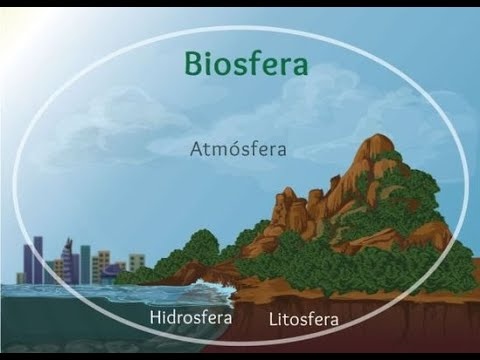
Subsistema biológico
El subsistema biológico está integrado por los organismos productores. consumidores (primarios. secundarios y terciarios) y desintegradores. En este subsistema se encuentran los materiales y sustanc ias orgánicas y ocun en las intrarrelaciones e interrelaciones bióticas entre organismos. Las interaccione y procesos abióticos-bióricos que ocurren entre los dos subsistemas constituyen un sistema ecológico llamado biosfera. En la biosfera, los seres vivos autorregulan estas interacciones e intercambios (de ene rgía y materia) y se caracterizan por ser complejas, de amplia escala temporal y amplia distribución espacial. Los intercambios de sustancias químicas en la biosfera ocurren vía ciclos, llamados ciclos biogeoquímicos. los cuales se caracterizan por presentar dos fases: la fase ambiental. donde el elemento quínúco está en fonna inorgánica en el suelo, agua y aire: y la fase orgánica, donde el elemento forma parte de los seres vivos (plantas y animales).
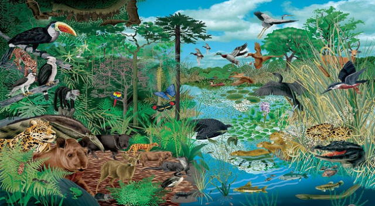
Unidad 2. Flujo de energía y ciclos bioquímicos
La Tierra funciona con base en dos procesos fundamentales, el flujo de energía y el ciclado de las sustancias o materia, ambos procesos son determinados y regulados por los seres vivos.
Flujo de energía
El tercer principio básico de la naturaleza establece que la Tierra es un sistema abierto con respecto al flujo de energía. El sol es la fuente externa de energía para la Tierra,
lo que determina que en cuando al flujo de energía, la Tierra funciona como un sistema abierto.
Con base en la Primera Ley de Termodinámica se puede validar que en la Tierra la única fuente de energía es el Sol y que ésta no puede ser creada o destruida, no obstante y a pesar del conocimiento y tecnologías generadas a lo largo del desarrollo humano, el ser humano no puede crear o destruir la energía, sólo transformarla.
Con base en la Primera Ley de Termodinámica se puede validar que en la Tierra la única fuente de energía es el Sol y que ésta no puede ser creada o destruida, no obstante y a pesar del conocimiento y tecnologías generadas a lo largo del desarrollo humano, el ser humano no puede crear o destruir la energía, sólo transformarla.
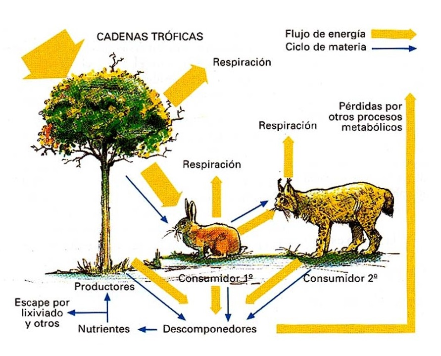
El equilibrio energético de la Tierra
A partir del Sol se inicia el flujo de la energía, la cual viaja a través del espacio y demora de siete a ocho minutos en llegar a nuestro planeta, un 34% es inmediatamente reflejado por las nubes, sustancias químicas y polvo suspendido en la atmósfera y por la superficie terrestre. Del 66% remanente, 42% calienta la atmósfera y la superficie del planeta, 22% evapora el agua y la circula a través de la ecosfera y el l% genera los vientos. El l % restante es capturado por las plantas verdes u organismos fotosintéticos y es utilizado para producir compuestos orgánicos a través del proceso de la fotosíntesis. De la proporción de energía absorbida por la superficie terrestre, ésta es posteriormente irradiada a la atmósfera calentando la parte baja de ella, causando además el proceso de evaporación, y ser redirigida de nuevo a la superficie terrestre, irradiada nuevamente a la atmósfera e irradiada por ésta al espacio exterior y salir por las ventanas atmosféricas.
Del 100% de la energía solar que recibe la Tierra, 99% es retornada al espacio exterior por los procesos de reflexión e irradiación, los cuales son determinantes para mantener el equilibrio o balance energético en el planeta.
El remanente 1% de la energía lumínica del Sol, entra al subsistema biológico donde es capturada y transformada de energía solar a energía de biomasa por las plantas fotosintéticas u organismos productores y esta energía química es dispersada a través de la cadena alimenticia a los consumidores (herbívoros, carnívoros y omnívoros) y desintegradores.
Pirámides ecológicas
El balance energético a lo largo de las cadenas tróficas es explicado por la Segunda Ley de Termodinámica, la cual indica que en cada transformación se pierde o disipa energía en forma de calor o en otras palabras la energía inicial se degrada a otra forma de energía menos útil o menos concentrada. El porcentaje de energía transferiJa de un nivel trofico a otro, varía de 2% a 30% dependiendo del número de niveles de las especies y del tipo de ecosistema. Con base en esta ley el flujo de la energía nos permite determinar a través de los niveles tróficos de las cadenas alimenticias nos permite determinar las pirámides ecológicas en términos de energía, biomasa y número de individuos.El término pirámide denota la disminución de las variables: energía, biomasa y número de individuos en el nivel inmediato superior, conforme se avanza a lo largo de la cadena trófica. como consecuencia de la energía perdida por costos de mantenimiento metabólico de los individuos del nivel inferior. Por ejemplo, en lo que respecta a la biomasa total la Tierra, 85% corresponde a la vegetación, l0% a la fauna y solamente 5% corresponde a biomasa humana.
Ciclos biogeoquímicos
El cuarto principio establece que la Tierra es un sis1ema cerrado con respecto al flujo de materia. Lo cual denota que las sustancias químicas son cicladas a través de complejas vías entre los subsistemas físico y biológico y convertidas en formas útiles (nutrientes o nutrimentos) por una combinación de procesos biológicos. geológicos y químicos que en conjunto son llamados ciclos biogeoquímicos.Flujo de materia
El ciclaje de sustancias químicas comienza con la incorporación de compuestos inorgánicos de la atmósfera y el suelo en los organismos productores, que los transforman en compuestos orgánicos mediante la fotosíntesis. Estos compuestos son consumidos por los organismos y, cuando mueren, los desintegradores los descomponen en compuestos inorgánicos que vuelven al ambiente, cerrando el ciclo. Los seres vivos juegan un papel regulador en la velocidad de este proceso. De los 26 elementos presentes en la Tierra, seis (C, H, O, N, P, S) constituyen el 95% de la biosfera y son llamados macronutrientes.
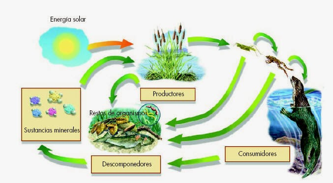
Ciclos gaseosos
En los ciclos gaseosos las sustancias circulan principalmente entre la atmósfera y los organismos vivos. Estos ciclos se caracterizan por una velocidad mayor de reciclado, generalmente de horas a días. Los principales ciclos gasosos son los del oxígeno, del carbono y del nitrógeno.Ciclo del oxígeno
El oxígeno es el elemento más abundante en los seres vivos y esencial para la vida. Se libera en la fotosíntesis y forma parte de moléculas orgánicas y del agua. Inicialmente, era tóxico para los organismos, pero su uso como oxidante en el metabolismo permitió obtener energía de manera eficiente. El 20% del oxígeno en la atmósfera proviene de los seres vivos y su ciclo está ligado al del carbono, ya que la fotosíntesis libera oxígeno, mientras la respiración lo consume. Además, el oxígeno se convierte en ozono, protegiendo a los seres vivos de la radiación ultravioleta.
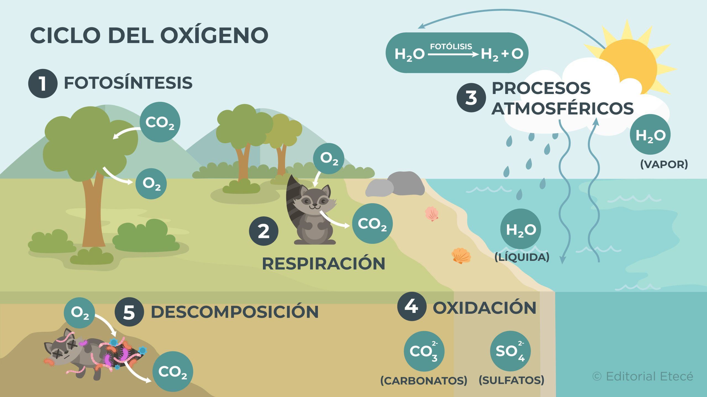
Ciclo del carbono
El ciclo del carbono involucra la litosfera, hidrosfera, atmósfera y biosfera. Es esencial para formar moléculas orgánicas como carbohidratos, lípidos, proteínas y ácidos nucleicos. Aunque la mayor reserva de carbono está en los sedimentos y rocas, su flujo es lento. La principal fuente de carbono para los seres vivos proviene de la atmósfera y la hidrosfera, con un 0.03% de CO2 en el aire. El ciclo se mantiene principalmente por la fotosíntesis y la respiración, siendo las plantas las responsables de fijar el CO2 y la base del ciclo del carbono. Este ciclo está vinculado al del oxígeno.
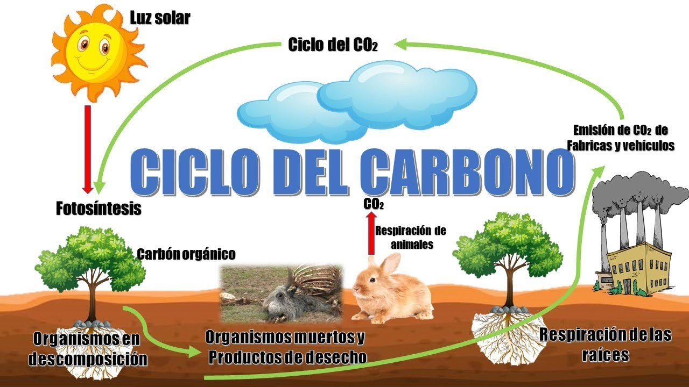
Ciclo de nitrógeno
El nitrógeno es esencial para la síntesis de proteínas, ácidos nucleicos y otras moléculas. Su principal reservorio es la atmósfera, donde constituye el 78%, pero en forma de gas inerte (N₂), que no puede ser utilizado directamente por la mayoría de plantas y animales, excepto por ciertas bacterias y algas. Estas bacterias y algas juegan un papel clave al fijar el nitrógeno, convirtiéndolo en nitratos (NO₃⁻) y amonio (NH₄⁺), que son solubles en agua y asimilables por las plantas. Los animales obtienen nitrógeno al consumir plantas u otros animales.
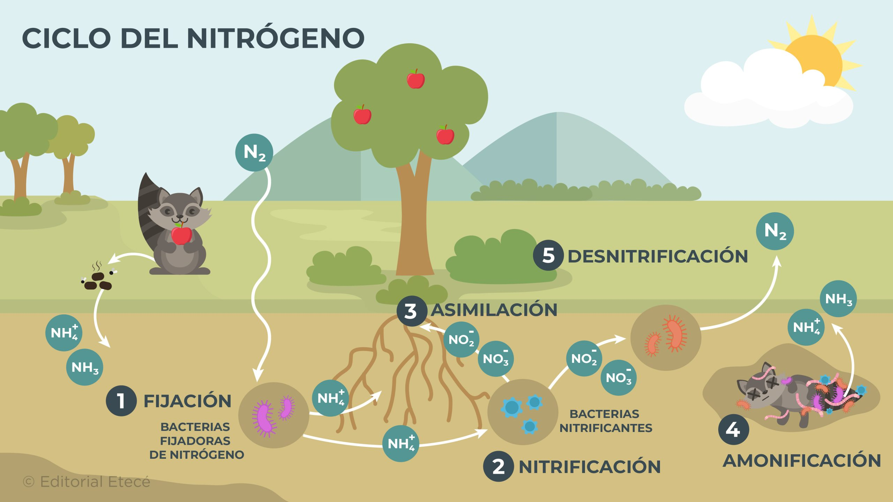
Ciclos sedimentarios
En los ciclos sedimentarios las sustancias químicas o nutrientes circulan entre la corteza terrestre (suelo. rocas y sedimentos de la tierra y del fondo marino), la hidrosfera y los seres vivos. Los nutrientes en estos ciclos generalmente son reciclados a una velocidad demasiado lenta debido a la retención de estos nutrienres por miles o millones de años por las rocas sedimentarias y por no presentar una fase gaseosa. Pertenecen a este tipo de ciclos el fósforo y e l azufre.Ciclo del fósforo
El fósforo es esencial para los organismos, formando parte de ácidos nucleicos, ATP y otras moléculas que almacenan energía. Está presente en pequeñas cantidades en plantas (0.2%) y en animales (hasta 1% de su masa). Su principal reservorio es la corteza terrestre, con un ciclo poco dinámico. Una vez en el suelo, el fósforo se vuelve insoluble y queda inmovilizado. Además, es arrastrado por el agua hacia el mar, donde se sedimenta y forma rocas que tardarán millones de años en liberar fósforo nuevamente. Las plantas lo obtienen por la meteorización de rocas o erupciones volcánicas.
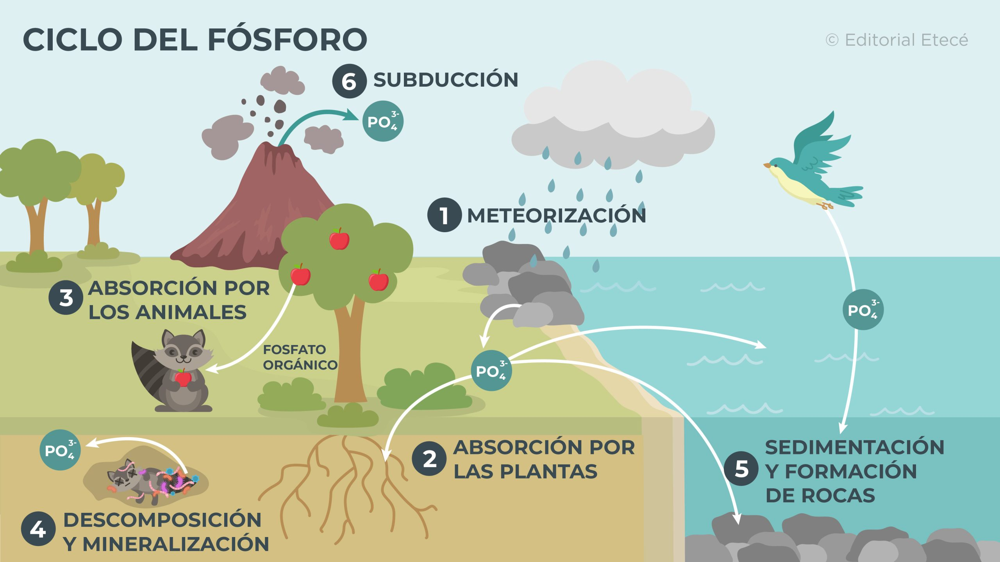
Ciclo del azufre
El azufre es un micronutriente esencial para los seres vivos, ya que forma parte de las proteínas. Su principal depósito son los océanos, en forma de sulfato inorgánico, y también se encuentra en sedimentos y rocas de la litosfera. Existen tres formas importantes de azufre en la naturaleza: sulfuros, azufre elemental y sulfato, cuya presencia varía según el pH. En condiciones anaeróbicas, las sales de azufre pueden ser reducidas y permitir la fotosíntesis basada en azufre, que fue el primer tipo de fotosíntesis en la Tierra. La actividad industrial humana ha incrementado las emisiones de gases sulfurosos, causando problemas como la lluvia ácida.
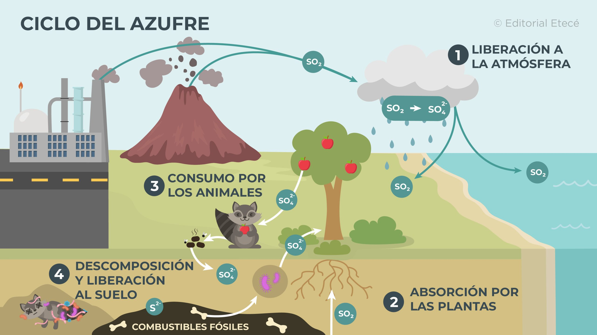
Ciclo hidrológico
El ciclo hidrológico muestra la circulación del agua entre el océano, la atmósfera, la litosfera y los seres vivos. El agua es esencial para la vida, actuando como disolvente universal y participando en muchas
reacciones químicas. Constituye entre el 50% y 90% de la masa de los organismos vivos, y es crucial para mantener la humedad interna en los organismos terrestres. Biológicamente, el agua disuelve sustancias
iónicas y polares, forma dispersiones coloidales y facilita el transporte de nutrientes. También es fundamental para la regulación térmica debido a su alto calor específico y de evaporación. El ciclo hidrológico,
impulsado por la energía solar y la gravedad, distribuye y purifica el agua. El Sol calienta el agua de océanos y ríos, provocando su evaporación hacia la atmósfera. Luego, el vapor se condensa en nubes, que se
desplazan por el viento. Cuando las gotas se agrandan, caen como precipitación. Parte del agua regresa a los cuerpos de agua, otra se infiltra en el suelo y recarga acuíferos. El reciclado del agua puede durar
desde días hasta miles de años, dependiendo de su depósito.
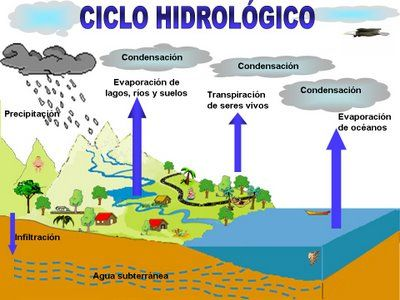
Regla de sustentabilidad
Los ciclos biogeoquímicos renuevan, purifican y regeneran las sustancias, determinando la productividad y sustentabilidad de los ecosistemas. Los seres vivos desempeñan un papel clave al regular la velocidad de
ciclado y regeneración de los nutrientes. Aunque los nutrientes son renovables, son finitos y pueden agotarse si las tasas de consumo y contaminación superan la capacidad natural de reciclaje.
Para garantizar la sustentabilidad y productividad de los ecosistemas, es crucial respetar la regla de sustentabilidad, que estipula que la velocidad de reciclaje, regeneración y conservación debe ser mayor que
la de consumo, contaminación y degradación.
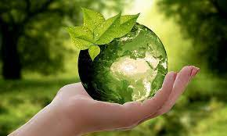
Los ciclos biogeoquímicos renuevan, purifican y regeneran las sustancias, determinando la productividad y sustentabilidad de los ecosistemas. Los seres vivos desempeñan un papel clave al regular la velocidad de
ciclado y regeneración de los nutrientes. Aunque los nutrientes son renovables, son finitos y pueden agotarse si las tasas de consumo y contaminación superan la capacidad natural de reciclaje.
Para garantizar la sustentabilidad y productividad de los ecosistemas, es crucial respetar la regla de sustentabilidad, que estipula que la velocidad de reciclaje, regeneración y conservación debe ser mayor que
la de consumo, contaminación y degradación.
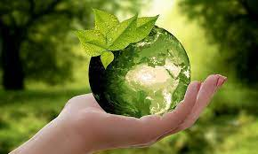
Referencias bibliográficas
Infobae. (2024, 22 abril). Día de la Tierra: por qué se celebra el 22 de abril y cuál es el lema 2024 para proteger el medio ambiente. Infobae. https://www.infobae.com/salud/2024/04/22/dia-internacional-de-la-tierra-por-que-se-celebra-el-22-de-abril-y-cual-es-el-lema-2024-para-proteger-el-medio-ambiente/2.2 Flujo de energía. (s. f.). https://desarrollosustentable5baitt.blogspot.com/p/22-flujo-de-energia.html
Álvarez, D. O. (2024, 3 agosto). Ciclo del oxígeno - Qué es, sus etapas e importancia. Concepto. https://concepto.de/ciclo-del-oxigeno/
Álvarez, D. O. (2024a, agosto 3). Ciclo del carbono - Qué es, sus etapas e importancia. Concepto. https://concepto.de/ciclo-del-carbono/
Álvarez, D. O. (2024d, agosto 6). Ciclo del nitrógeno - Qué es, etapas y su importancia. Concepto. https://concepto.de/ciclo-del-nitrogeno/
Álvarez, D. O. (2024d, agosto 6). Ciclo del fósforo - Qué es, etapas y su importancia. Concepto. https://concepto.de/ciclo-del-fosforo/
Álvarez, D. O. (2024a, agosto 3). Ciclo del azufre - Qué es, en qué consiste y sus etapas. Concepto. https://concepto.de/ciclo-del-azufre/
Institutodelaguaes. (2024, 25 marzo). Imagen del Ciclo Hidrológico: Un Viaje Ilustrativo a través de los Secretos de la Hidrología | Instituto del Agua. Instituto del Agua. https://institutodelagua.es/hidrologia/imagem-do-ciclo-hidrologicohidrologia/
De Economía, S. (s. f.). Normas Voluntarias en materia de Sostenibilidad. gob.mx. https://www.gob.mx/se/acciones-y-programas/estandares-voluntarias-en-materia-de-sustentabilidad